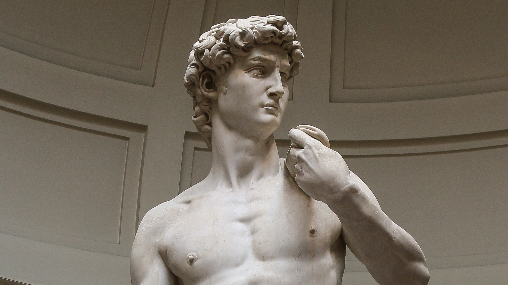

David representa al David bíblico que enfrenta y vence al gigante Goliat solo con algunas piedras y su inteligencia. Luego se convertiría en el rey David. ¿Cómo lo representa Miguel Ángel? ¿Qué oculta el David de Miguel Ángel en sus manos? En esta escultura, un musculoso David se representa erguido justo antes del combate. Apoya su mano izquierda sobre el hombro, y en ella porta el saco de su honda. Desde allí, una suerte de arnés ciñe su espalda hasta la mano derecha, junto al muslo. Esta mano oculta lo que podría ser un fustíbalo, es decir, una honda de fuste, de uso común entre los romanos. Veamos a continuación sus principales características.
Con 5,17 metros de altura y 5,5 toneladas de peso, la escultura fue un encargo de la Opera del Duomo para la catedral de Santa María del Fiore en Florencia. Pero tanto sus dimensiones como su calidad hicieron que se destinara a la Piazza della Signoria, donde estuvo hasta el siglo XIX. Actualmente el David está ubicado en la Galleria dell’Accademia en Florencia, Italia
David es una escultura hecha de un solo bloque de mármol blanco extraído de las montañas de Carrara, famosa por la gran calidad de su mármol. El bloque de mármol blanco sufrió intervenciones de tres artistas diferentes a lo largo de varios años. Esto provocó en el bloque fracturas y perforaciones. En 1501, 25 años después de la última intervención, las autoridades de la Opera del Duomo encargan a Miguel Ángel el trabajo monumental de un David para la catedral de Florencia
